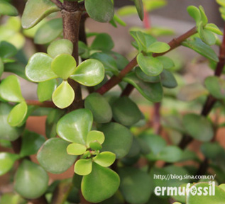

马齿觅树
拉丁名 Portulacaria afra Jacq
马齿觅科
马齿苋树属
在欧洲、南美洲、中东地带都有其野生型，但英国、法国、荷兰及美国为栽培种为主。
简介
年生常绿肉质灌木，株高3m左右，茎肉质，紫褐色至浅褐色，分枝近水平伸出，新枝在阳光充足的条件下呈紫红色，若光照不足，则为绿色。
肉质叶倒卵形，交互对生，叶长1.2cm至2cm，宽约1cm至1.5cm，厚0.2cm，质厚而脆，绿色，表面光亮。小花淡粉色。
该树种喜温暖干燥和阳光充足的环境，耐干旱和半荫，不耐涝，也不耐寒。
马齿苋树的繁殖多用扦插的方法，在生长季节进行。
图集
